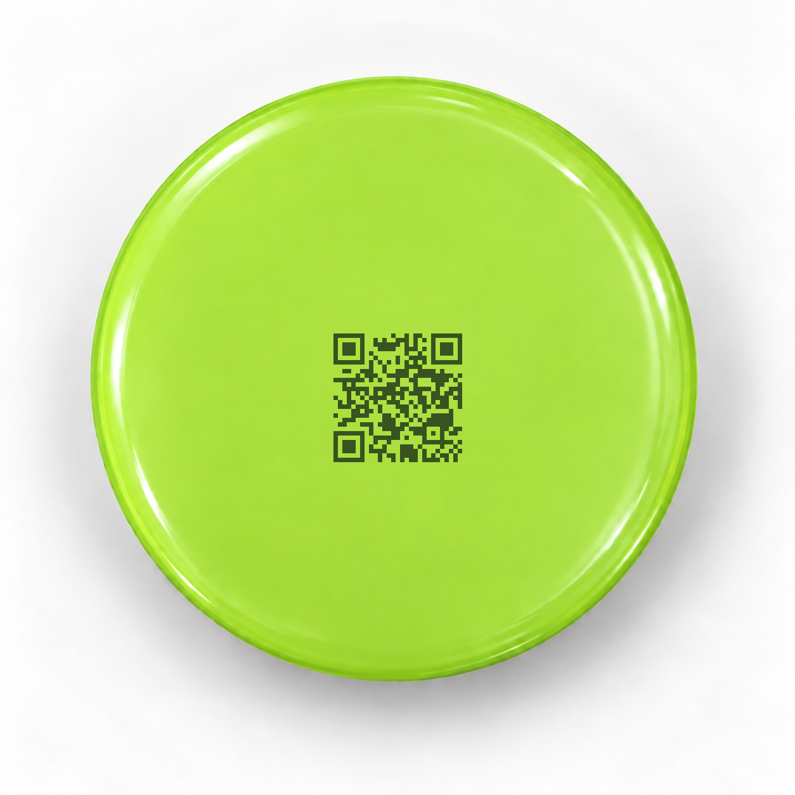

Plastic QR Code Marking
플라스틱 뚜껑에 새긴
QR코드
플라스틱 용기 뚜껑의 중앙에 쿠키혼레이저 홈페이지로 연결되는 QR코드를 레이저로 마킹했습니다. 제품 표면에서 코드가 어떻게 표현되는지 편하게 살펴보세요.
Sample Overview
뚜껑 중앙 QR코드 마킹
색상이 있는 플라스틱 뚜껑 표면에 QR코드를 배치한 샘플입니다. 코드를 스캔하면 www.kooky.co.kr로 연결되며, 잉크나 라벨 없이 제품 표면에 직접 정보를 표현하는 구성을 확인할 수 있습니다.
플라스틱 용기
QR코드
직접 마킹
실제 양산 적용 시에는 제품의 수지 종류와 색상, 표면 상태에 맞춰 조건을 선정하고 QR코드 판독성도 함께 확인합니다.
Review Points
플라스틱 QR 마킹에서 확인할 점
소재와 색상
수지의 종류, 첨가제와 색상에 따라 마킹 대비와 표면 반응이 달라질 수 있습니다.
코드 크기
인쇄 영역과 곡률을 고려해 모듈 크기, 여백과 위치를 함께 검토해야 합니다.
판독 테스트
실제 사용 환경의 조명과 리더기로 QR코드 인식 여부를 확인한 뒤 조건을 확정합니다.